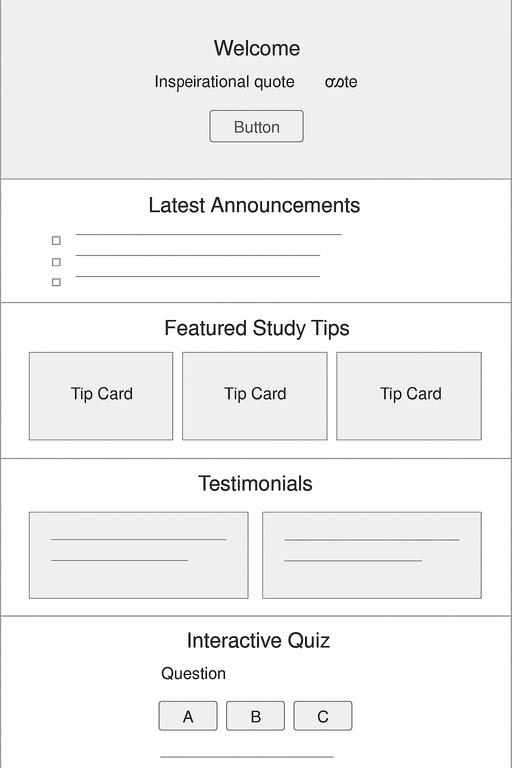
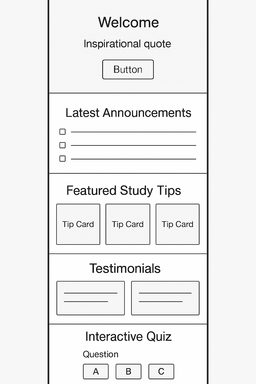

Site Name
BYU Remote Learning Hub - A resource center for BYU students learning online, offering study tips, organization tools, and productivity hacks.
Site Purpose
This site will help online students:
- Manage their assignments & deadlines
- Learn productivity techniques
- Find useful study resources
Scenerios
Visitors might ask:
- How can I manage my assignments effectively?
- What are some good study tips for online learning?
- Where can I find useful resources for my courses?
Color Schema
- Primary Color: BYU Blue (#002E5D) - Used for headers & buttons
- Accent Color: Light Blue (#0073CF) - Highlights and links
- Background: White for clean readability
Typography
- Lato - Headings
- Josefin Sans
- Nunito
Wireframe
Destop Version
Mobile version
